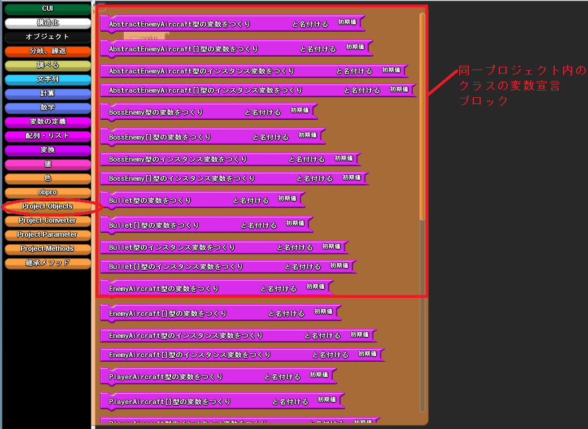

変数の宣言
変数ブロックの場所
左側にある「projects-objects」というファクトリをクリックし，任意の型のブロックを取り出すことができます．

クラス・メソッドの利用
インスタンスの持つメソッドを呼び出す
宣言した同一プロジェクト内のクラス変数は，右クリックすることで利用可能なメソッドが表示されます．
表示されたメソッドをクリックすることでメソッド呼び出しブロックを作成することができます．
例えば，PlayerAircraft型の変数を右クリックした際には以下のようになります．